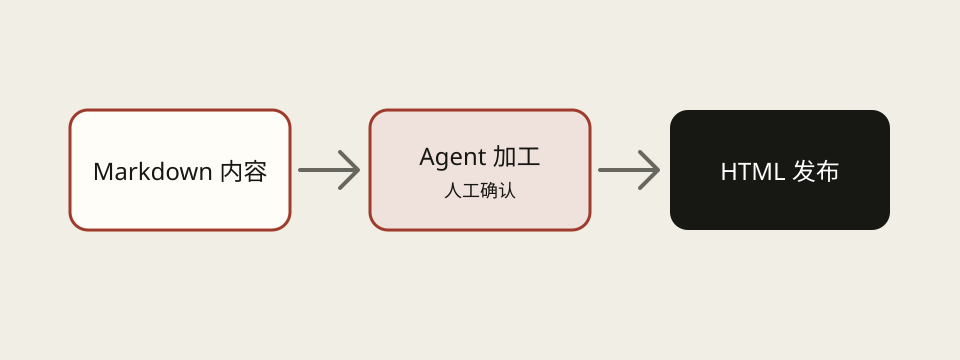

SuperWagie 把 Markdown 当作内容事实源。交付工作流不会静默越过人工确认，也不会让风格选择覆盖来源和结构。
内容不足时先补内容。
系统应回到内容工作区，引导用户补齐材料，再进入交付物制作。
系统应回到内容工作区，引导用户补齐材料，再进入交付物制作。
从一份基线出发
不同交付物有独立目录和版本，但都能追溯到同一份 Content Baseline。修改上游后，只失效真正受影响的下游页面。

一键分享不是随意外发
HTML 只发布到 SuperWagie 官网提供的 Official Host。用户看到的是预览、发布、更新、回滚和停止分享，不需要理解服务器或第三方 Publisher。